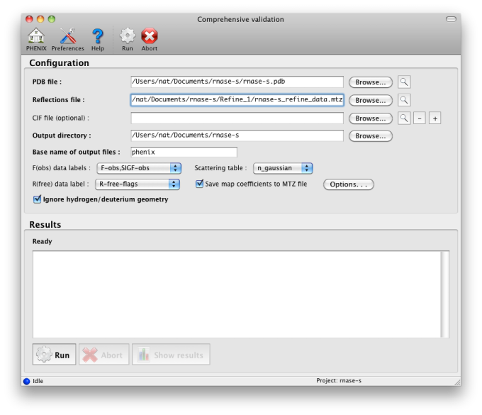
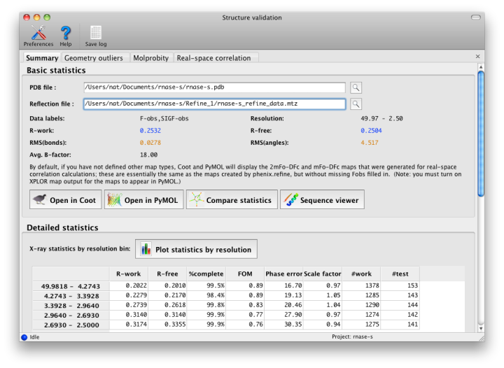
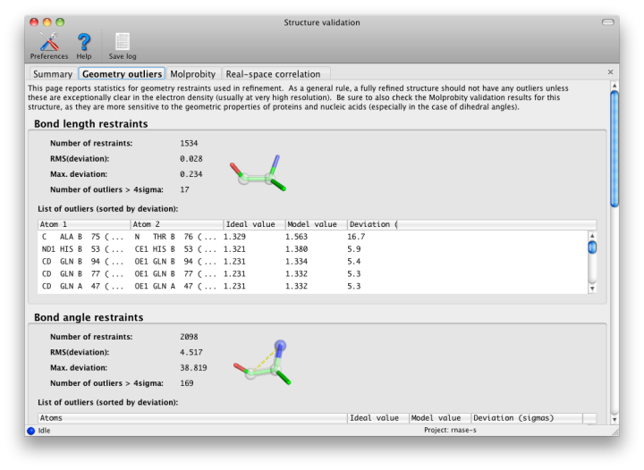
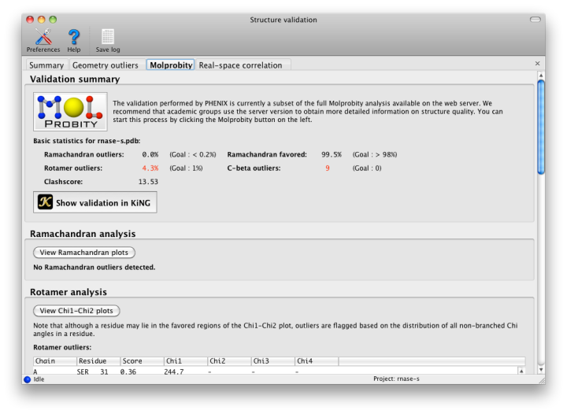
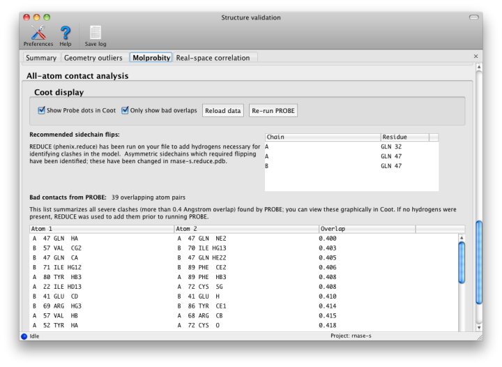
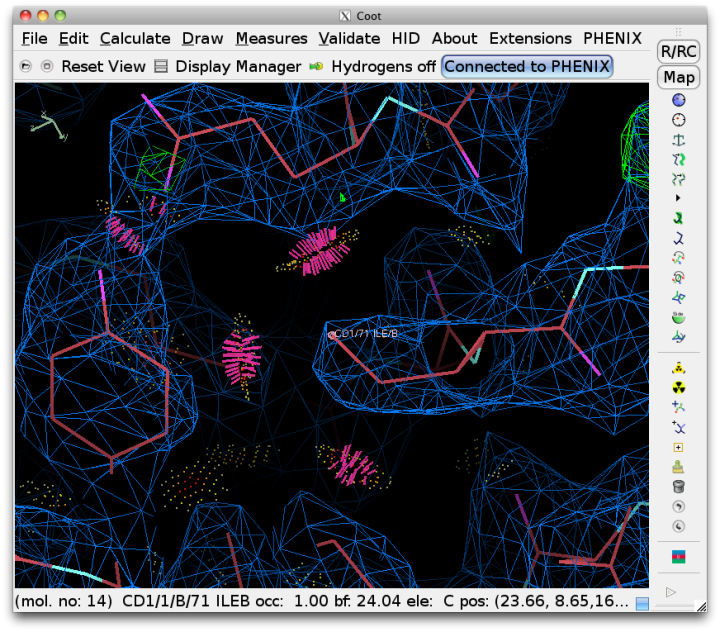
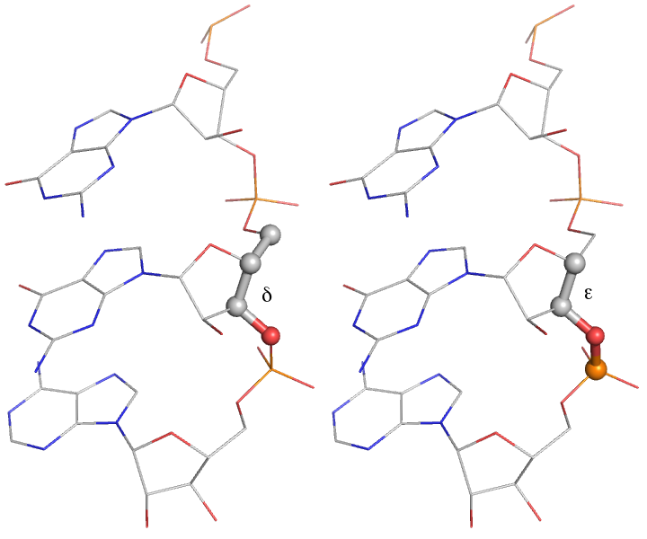
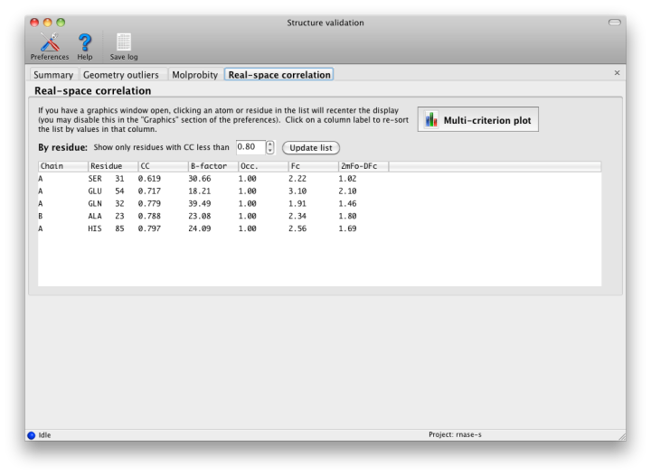
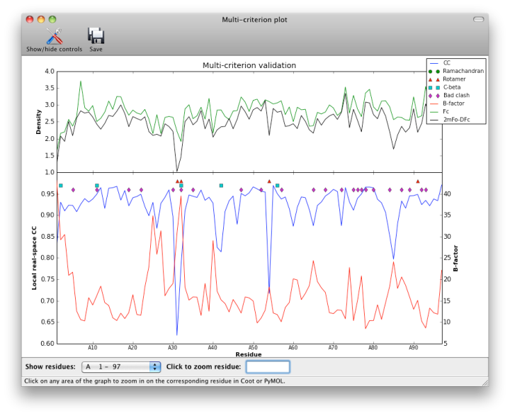
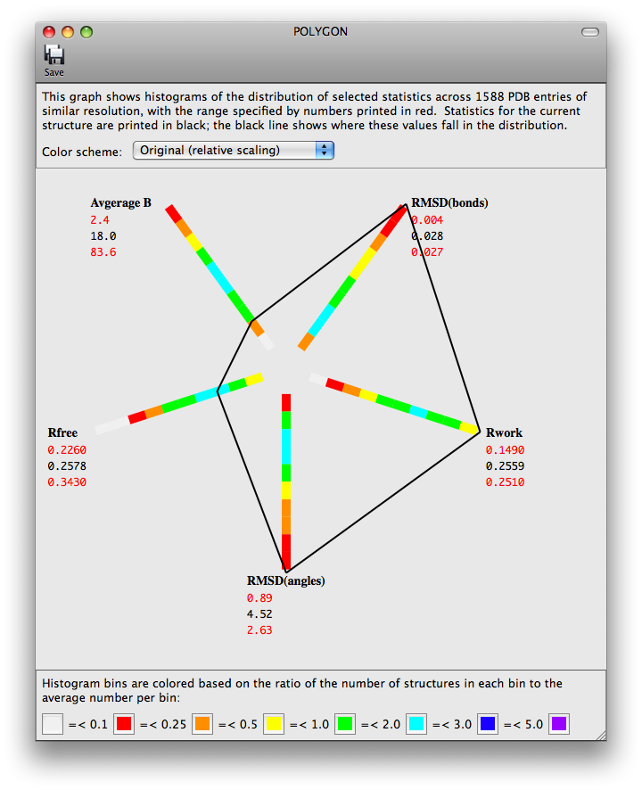

This document covers the use of the validation software in the Phenix GUI, which is run both as a standalone program and automatically as part of phenix.refine. Much of this software is derived from the MolProbity web server. Although it is possible to run validation with only a model, we recommend including experimental data, as interpreting geometry outliers only makes sense in the context of the electron density maps.
For running with crystallographic data (X-ray or neutron), use the Comprehensive Validation GUI (X-ray). For running with cryo-EM data, use the Comprehensive Validation GUI (Cryo-EM) (see validation_cryo_em).
The analyses performed by Phenix include:
- identification of outliers from restrained geometric parameters (bonds, angles, etc.)
- Ramachandran plot and outlier info
- identification of disfavored protein sidechain rotamers (and chi1-chi2 plot)
- all-atom contact analysis with explicit hydrogens (including clashscore)
- suggestions for asymmetric sidechain flips (Asn, Gln, His)
- real-space correlation to electron density (RSCC)
- multi-criterion plot of B, RSCC, density values, and MolProbity outliers by residue numbers
Any non-protein molecule will be included in the real-space fit evaluation, and if CIF files are provided, geometric outliers will be detected as well. Comprehensive validation of nucleic acid structures is planned for a future release.
All of the outliers listed in the GUI link to supported molecular graphics programs (currently Coot, PyMOL, and the internal viewer) if launched from within Phenix. Clicking an outlier will recenter the graphics window on that atom or residue, and in some cases will also highlight the relevant selection. If experimental data are included, buttons in the result window will open the model and maps in the graphics programs.
If you are performing crystallographic refinement with the *phenix.refine* GUI, or real-space refinement with the *phenix.real_space_refine* GUI GUI, the validation will be performed automatically as soon as the final model is ready. To validate a model with diffraction data, launch the "Comprehensive validation" app from the main GUI. At a minimum, you will need a PDB file, and should probably add a reflections file containing intensities or amplitudes and R-free flags, plus any CIF files required by non-standard ligands in the structure. Most parameters should be extracted automatically.

After running the validation, a new window will open with the results. If experimental data were included, the first tab will summarize the statistics including R-factors, plus data plots. Buttons for Coot and PyMOL will also appear. Additional tabs contain the MolProbity validation suite, sanity checks for atomic properties (B-factor and occupancy), and real-space correlation.

An initial tab shows the target and actual values for assorted validation criteria (mostly specific to proteins). See below for advice on interpreting these results. Residues with missing atoms are listed in a separate section; although these are not necessarily errors, they are often unintentionally left incomplete.
Phenix, like most crystallographic software, uses the Engh and Huber (1991) restraints for proteins, nucleic acids, and other common molecules, here in the form of the CCP4 monomer library. Other restraints come from CIF files provided by the user; these can be generated by phenix.elbow and associated programs. These restraints are used in refinement to prevent distortions of model geometry, and to increase the observation-to-parameter ratio. The default restraints are for bond lengths, bond angles, dihedral (torsion) angles, chiral centers, planar groups (such as aromatic rings), and nonbonded (VDW) interactions. All of these are analyzed here except for the nonbonded restraint outliers, which are made redundant by the much more thorough all-atom contact analysis (see below).

All restrained values have an associated "sigma", i.e. the observed standard deviation from that value in very high-resolution structures; this is used to weight the restraint during refinement. Large deviations (greater than 4 sigma) from the restrained values usually indicate something seriously wrong with the model, and should not be taken as examples of genuine structural strain unless the electron density for that feature is exceptionally good (usually only at ultra-high-resolution, i.e. better than 1.0 Angstrom) and the deviation is no more than approximately 7 sigma. At moderate-to-low resolutions, there should be almost no outliers, although strained dihedral angles are possible.
The geometry of protein chains is restricted by additional empirical observations that are not part of the standard restraints. The "Protein" tab contains these analyses. Many structures contain residues that have been correctly placed but are flagged as Ramachandran or rotamer outliers; however, there are rarely more than a handful of these. At resolutions below 3.0A, any outliers should be considered errors. No C-beta outliers are acceptable at anything worse than sub-atomic (< 0.8A) resolution.

The rest of the tab is divided into several sections:
- The Ramachandran plot, sets limits on the combination of Phi (C-N-CA-C) and Psi (N-CA-C-N) dihedral angles for any residue. In Phenix and MolProbity, the standard distribution of values is taken from the Top8000 database of high-resolution protein structures. The main window contains a list of scored outliers (the lower the score, the worse the residue), and all residues are plotted graphically in a separate window. The scoring depends on the residue type and relative position; Gly, Pro, and adjacent residues depend on different distributions, all of which can be viewed in the plot window.
- Rotamer comparisons also use the Top8000 database, and all sidechain Chi angles for a residue are evaluated together. Any residue which has an outlying sidechain dihedral restraint is likely to be flagged by this analysis too. The distribution of Chi1-Chi2 angle combinations for each residue type is also plotted in a separate window, against a background distribution taken from the Top8000 database. (Note that longer residues may be flagged as outliers based on the value of Chi3 or Chi4, even though they fall into the favored region of the Chi1-Chi2 plot.)
- C-beta atoms deviating from the proper position are flagged; these are caused by incompatible sidechain and mainchain positions, which are usually due to incorrect fitting to the density. This will most likely be reflected in the comparison to restraints, with significant deviation from chirality and bond lengths or angles.
Nonbonded restraints used in refinement can function with or without explicit hydrogen atoms; however, if hydrogens are absent, the atomic radii of other atoms will be increased to compensate. This approximation works decently on a global structural level, but often leaves chemically impossible geometries in place. Therefore, for this step, hydrogens are added to the model (proteins and nucleic acids only at this time) by phenix.reduce; this will first strip off any existing hydrogens. Reduce will flag residues whose sidechains require flipping based on hydrogen-bonding geometry and clashes caused by newly added hydrogens. These include Asn, Gln, and His, which are easily mis-fit due to the apparent symmetry of the sidechain without hydrogens.
Once hydrogens have been added, phenix.probe is run to analyze the atomic contacts. All atomic overlaps worse than 0.4A are listed, and a global "clash score" is reported for the entire structure (calculated as 1000 * (number of bad overlaps) / (number of atoms)). This should be as low as possible, although a value of zero is both difficult and unusual. We strongly recommend refining with explicit hydrogens at any resolution, as this typically improves overall model geometry (and rarely makes anything worse).

Since Coot is able to read the output of Probe and graphically display the contacts as dots and dashes, this information will be automatically read into Coot when run from Phenix. Display of the dots can be toggled using the external validation window popped up in Coot. Bad overlaps will be drawn as hot-pink dashes. It is usually much easier to visualize the cause of the problem if hydrogens are drawn as well.

A more robust set of target bond and angle values for RNA chains is applied separately from the parameters in the CCP4 monomer library. This includes conformation-dependent restraints on the backbone sugar pucker, illustrated below. Improvement of geometric refinement of RNA structures is an ongoing project withing PHENIX; currently, most RNA structures exhibit at least a few outliers (and sometimes many).

This is the only part of validation that requires the underlying diffraction data. Phenix will perform bulk-solvent correction and scaling on the data and calculate a likelihood-weighted 2mFo-DFc map. This is compared to a map calculated from the model alone, and correlation coefficients for each residue are obtained. At resolutions better than 2.5 Angstroms, the values for individual atoms will also be displayed. In the GUI, these lists can be filtered and/or sorted by CC.

Although real-space CC can be a useful indicator of poorly fit regions of a molecule, it should not be interpreted as an absolute score, and it is difficult to identify an ideal cutoff below which the score should never fall. However, it is generally useful to inspect the 2mFo-DFc and mFo-DFc maps for residues which score below 0.8. Some of these will be correctly placed but poorly ordered; this is not a problem as long as the geometry is within normal bounds. The B-factor, occupancy, and absolute density values should also be considered when evaluating the results, as these may indicate parts of the structure that are intrinsically disordered. The multi-criterion plot displays these values (over 100-residue regions) along with validation outliers. Clicking anywhere inside the plot will zoom in on the corresponding residue at that position in Coot or PyMOL.

The program POLYGON (Urzhumtseva et al. 2009) has been ported to the Phenix GUI for comparing model quality indicators to similar structures in the PDB. Pre-computed values for a selection of 1000 structures determined at a similar resolution are plotted radially as one-dimensional histograms. The score for the model for each of these statistics is also plotted on the histograms, and the lines connecting these points form a complete polygon. For a high-quality, well-refined structure, the shape should be approximately symmetric and relatively small.

Rotamer fixing and N/Q/H sidechain flips are now options in phenix.refine, the latter now part of the default settings. There are currently no fully automatic corrections for any of the other problems identified in validation. phenix.autobuild can be used to rebuild problem regions of the structure, but this becomes more difficult as the quality of the map decreases or the resolution gets worse. Re-refinement with a slightly different protocol is often helpful; in particular, explicit hydrogens can help constrain the model. The weight applied to X-ray terms during refinement may need to be reduced in favor of geometric restraints; this can be done automatically by phenix.refine.